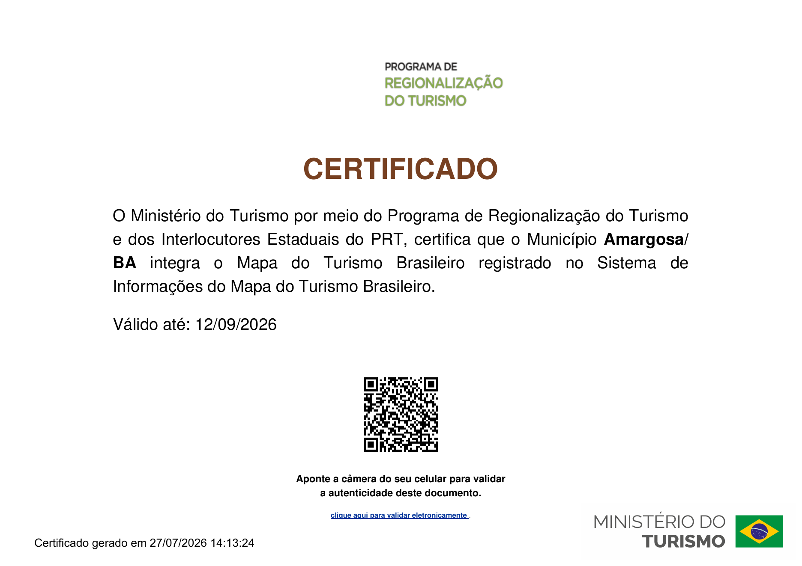

Certificado 01
Amargosa no Mapa do Turismo Brasileiro
O Ministério do Turismo certifica que Amargosa integra o Mapa do Turismo Brasileiro no Programa de Regionalização do Turismo.
Válido até 12/09/2026
Abrir certificado em PDF